Portfolio · Nova Odessa, SP, Brazil
Eduardo Figueiredo
Applied research, technology, and project management
I help teams get clearer on what to prioritize and how to improve, using research and data so decisions actually stick.

01
Why this work
Digital solutions in service organizations have to survive real operations. Looking good in a review is not enough.
The work connects digitization, data paths, and applied-research quality gates. Architecture that teams can actually run.
02
Academic foundations
Technical school at ETEC Bento Quirino, then Unicamp. Grade A in all master's coursework. English proficiency verified. Portuguese is native; English is fluent (General American accent, with a highlight in phonetics).
- Proactive
- Self-reliant
- Organized
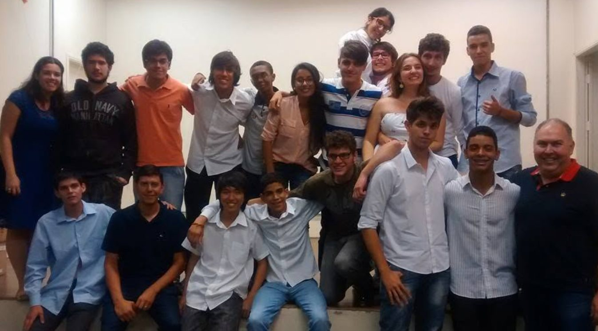
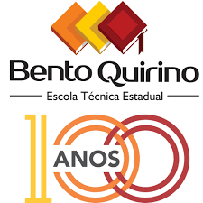
Internal social network, built as a web application
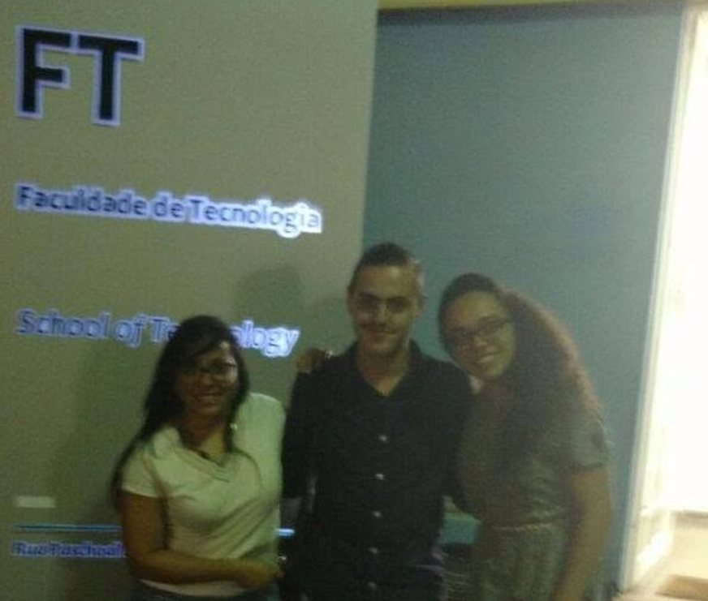
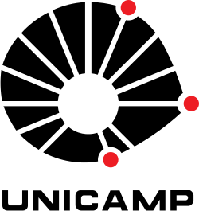
Web application for student activities, with traditional project management

Best score in every discipline
Master's dissertation on perceived trust, with TrustMate

03
Bosch, place by place
The path crosses Bosch locations: Campinas, Hungary, Sorocaba, and Campinas again.
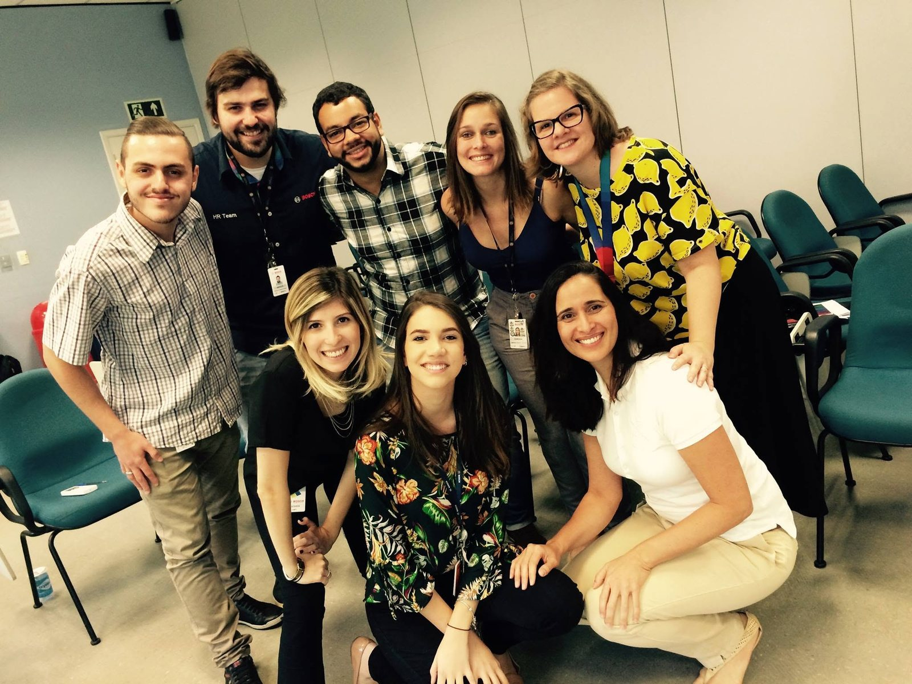
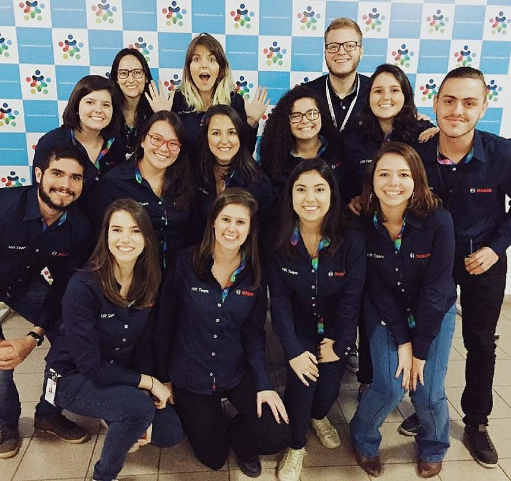


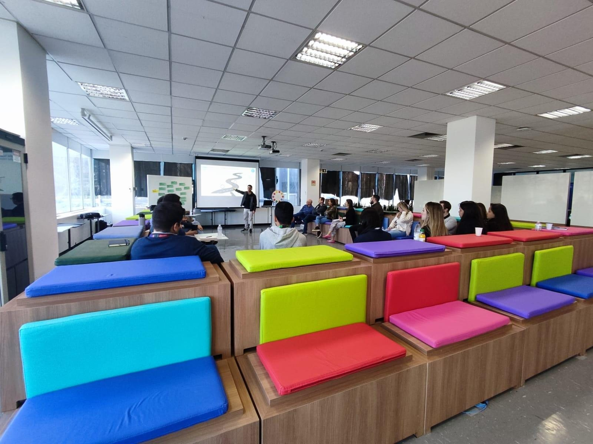

04
Deliverables
Applied Research and Technology at Bosch Brasil, plus tools, portals, and models shipped across projects.
Select any deliverable to expand details and visuals.
All images are anonymized in order to respect the data privacy for the project.
07
Trust in AI and interfaces
The master's dissertation asks whether AI agents can stand in for humans when scoring perceived trust on e-commerce interfaces. The model is ITQM / MQCI, rooted in ISO/IEC 25000. TrustMate collects the questionnaire and scores Usability, Accessibility, and UX.
ChatGPT o3 agents were compared with 127 IT students on three sites. Agents do not replace human evaluation. They are a useful automated triage: directional alignment on the top and bottom attributes, and a stricter bias on most leaf scores.
- Shapiro-Wilk on attribute scores before inferential tests.
- Python computed Welch (human vs AI), paired t-tests (human vs human), and independent t-tests (AI vs AI), with Cohen's d and Benjamini-Hochberg FDR.
- Results went into Power BI: mean, SD, variance, standard error, confidence intervals, and more than 50 chart structures.
Published at ISSRE 2025 (HFSD Workshop) and IHC 2025 (SBC SOL).
InfoVis coursework at Unicamp (grade A) used PNAD Contínua in Power BI: Sankey, choropleth, and faceted views of education and employment.
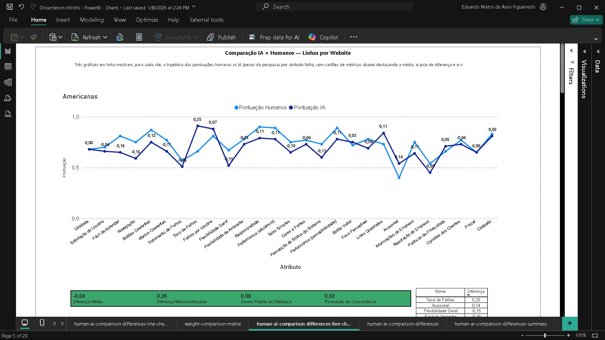
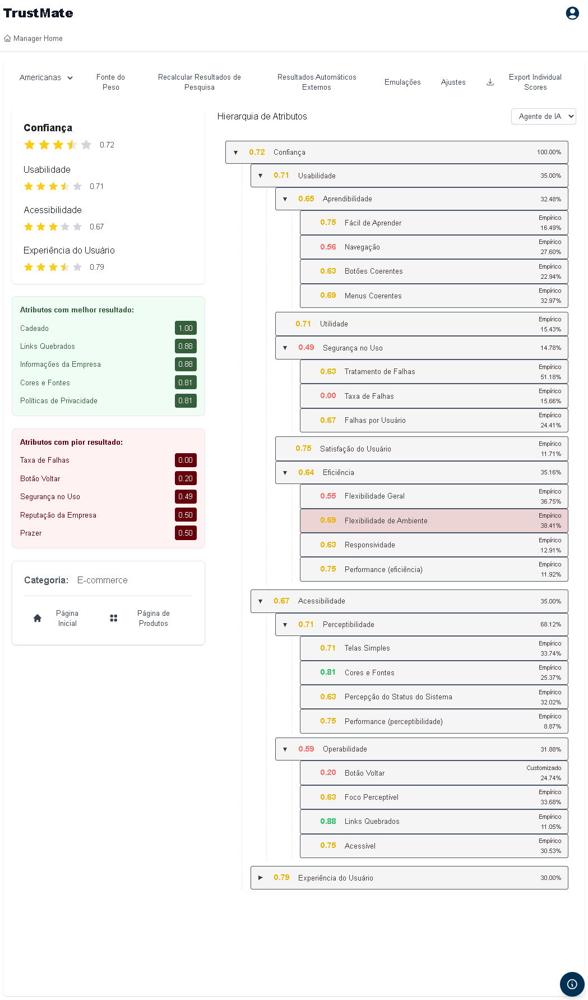
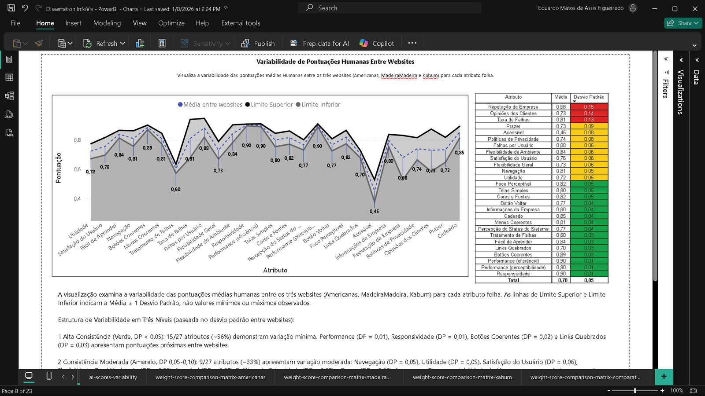
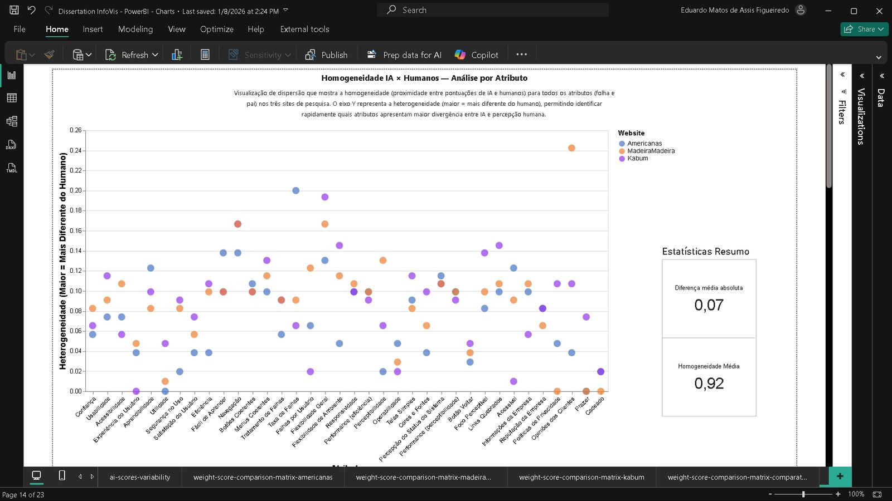


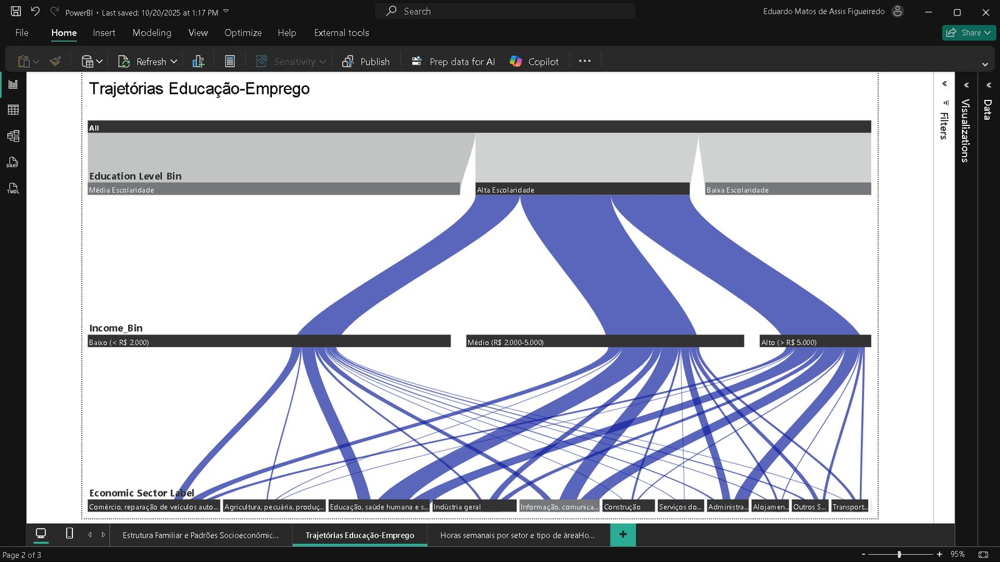
10
What I do outside the job
At home: my dog Moka, my two cats Baby and Faísca, learning piano, and a split keyboard I use for macros.
- Piano
- Linguistics
- Physics
- Impressionist art
- Macros and keyboards

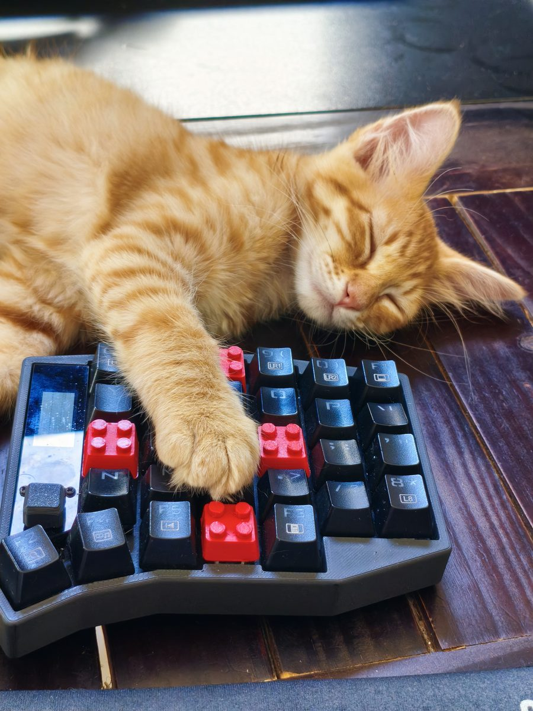
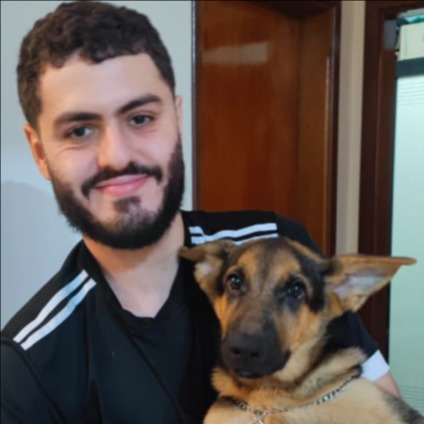
11
Let's connect
I bring applied research, technology, and project delivery. What I care about is work people can trust and use, with clear data and results you can measure.
edu.evangelista.figueiredo@gmail.com LinkedIn Lattes ORCID +55 (19) 98176-6583Resume and the slide deck are available on request.